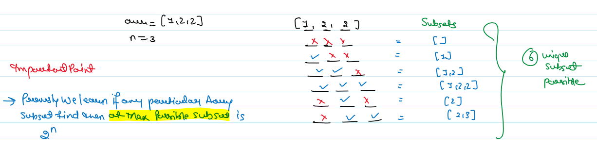

JB TAK FODEGA NHI .... TB TK CHODEGA NHI .... (MAANG)


L13 Subsets II or Subsets Sum II
Given an integer array nums that may contain duplicates, return all possible subsets (the power set).
The solution set must not contain duplicate subsets. Return the solution in any order.
Example 1:
Input: nums = [1,2,2]
Output: [[],[1],[1,2],[1,2,2],[2],[2,2]]
Example 2:
Input: nums = [0]
Output: [[],[0]]
Constraints:
- 1 <= nums.length <= 10
- -10 <= nums[i] <= 10
Notes
Note: Zoom for Better Understanding
Intuition: This Problem is the Extended Version of the Subset Sum I
Approach: In Prevesely Problem is the our Main task is finding all the Possible Subset and this problem finding all the possible sunset without any dublicate Subset.
At every index, we make a decision whether to pick or not pick the element at that index. This will help us in generating all possible combinations but does not take care of the duplicates. Hence we will use a set to store all the combinations that will discard the duplicates.

Code Zone!
.png)
.png)
Sb Mai He Kru ...
Khud Bhi Kr le Khuch ..... Nalayk
Time Complexity:O( 2^n *(k log (x) )). 2^n
Reason:for generating every subset and * log( x) to insert every combination of average length k in a set of size x. After this, we have to convert the set of combinations back into a list of list /vector of vectors which takes more time.
Space Complexity: O(2^n * k)
to store every subset of average length k. Since we are initially using a set to store the answer another O(2^n *k) is also used.
Approach:
In the previous method, we were taking extra time to store the unique combination with the help of a set. To make the solution efficient we will have to decide on a method that will consider only the unique combinations without the help of additional data structure.
Lets understand with an example where arr = [1,2,2 ].
Initially start with an empty data structure. In the first recursion, call make a subset of size one, in the next recursion call a subset of size 2, and so on. But first, in order to make a subset of size one what options do we have?
We can pick up elements from either the first index or the second index or the third index. However, if we have already picked up two from the second index, picking up two from the third index will make another duplicate subset of size one. Since we are trying to avoid duplicate subsets we can avoid picking up from the third index. This should give us an intuition that whenever there are duplicate elements in the array we pick up only the first occurrence.
The next recursion calls will continue from the point the previous one ended.
Let’s summarize:-
Code Zone!
.png)
.png)
Sb Mai He Kru ...
Khud Bhi Kr le Khuch ..... Nalayk
Time Complexity:O(2^n)
Reason:for generating every subset and O(k) to insert every subset in another data structure if the average length of every subset is k. Overall O(k * 2^n).
Space Complexity: O(2^n * k)
to store every subset of average length k. Auxiliary space is O(n) if n is the depth of the recursion tree.